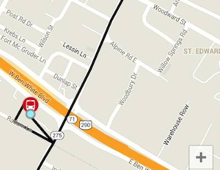
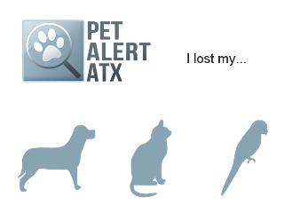
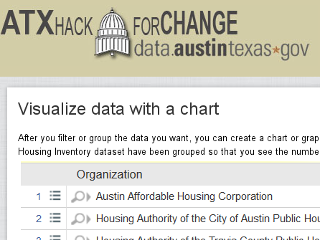

ATX Hack for Change
Earlier this month, over 150 hackers assembled on the St. Edward's University campus for the second annual ATX Hack for Change, part of the National Days of Civic Hacking.
The organizers spent months first, reaching out to the community to identify potential projects of civic and social good. Then, community members were invited to come participate for the weekend, and share their skills for community good.
23 different projects were pitched at the start of the event. Hackers worked on these projects throughout the weekend, and at the end, 18 projects reported back results.
Here are some examples.
Metro Rappid
The "Metro Rappid" team reverse engineered the API for the closed Capital Metro app, and produced a prototype Android mobile app that was very simple and user friendly.
Although the event was non-competitive, a participant preference poll was taken ad the end of the event. This app was selected as the participants' favorite.
Pet Finder
Hackers wanted to build an app that would alert pet owners when their lost pets were taken in by the Austin Animal Shelter. The shelter does not provide a data feed, but they do post intakes to a website (which suffers from extreme usability problems).
The hackers create a prototype tool to scrape data from the website, post updates to a database, provide searches, and allow users to subscribe to SMS notifications.
How-Tos for Citizen Data Analysts
Non-coders can hack too.
A team of writers spent the weekend creating documentation to help people use the features of the City of Austin Open Data portal. Their goal was to empower citizens to access government data, to generate reports, charts, and maps.
They created a wiki website with their content.